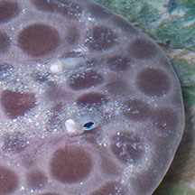
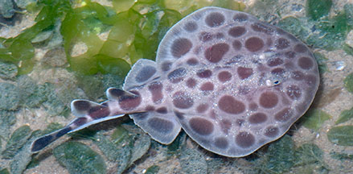
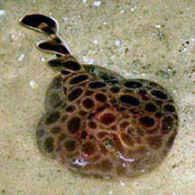
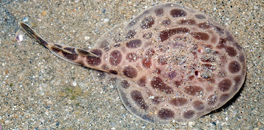

|
|
| fishes text index | photo index |
| Phylum Chordata > Subphylum Vertebrate > fishes > Order Rajiformes |
| Electric rays Family Narcinidae updated Sep 2020 Where seen? This rather chubby ray with a stumpy tail was seen on Changi several times, among seagrasses. Elsewhere, they are found in sandy, muddy areas, from river mouths to coral reefs. It was previously in Family Torpenididae. What are electric rays? Electric rays are rays belonging to Order Torpediniformes. Some scientists group these fishes in the Family Narcinidae which according to FishBase has 9 genera and 24 species. They are found in the Atlantic, Indian and Pacific Oceans. Numbfishes are different from stingrays that belong to the Family Dasyatidae. Features: 15-60cm in diameter. Body flattened disc-shaped. Like other rays, it takes water in from gill openings on the upperside of the body, expelling water out from gill slits on the underside, enlarged pectoral fins along the body edges. Unlike stingrays, the numbfish has a pair of obvious dorsal and a tail fin too. The tail is short and fat and not whip-lik, and lacks stinging barbs.. The Dark-spotted numbfish (Narcine maculata) has a round body about 10cm in diameter. Beige with large maroon spots of varying sizes. Short fat tail with two round (circular) dorsal fins and a round tail fin. |
 Gill openings behind the eyes. |
 Narcine maculata Short fat tail with round dorsal and tail fins. Changi, Jun 05 |
|
|
What do they eat? Electric rays use their electric power to stun fishes that they eat. While most eat small fishes, some species can stun relatively large fishes that are eaten whole. The jaws and mouth are highly protrusible forming a tube to suck up prey. Some shallow water species spend most of their time buried in the sand with only their nostrils visible. Electric babies: These fishes give birth to live young, producing small litters. |
| Electric rays on Singapore shores |
On wildsingapore
flickr
|
| Other sightings on Singapore shores |
 Narcine maculata Chek Jawa, Jul 04 Photo shared by Lim Cheng Puay. |
 Narcine maculata Changi, Jun 12 Photo shared by Marcus Ng on flickr. |
Links
References
|